Chapter 9. Mrs. Patty's Weird House - Part 2 of 2
Hey, that was totally not fair! Mrs. Patty was trying to turn trick-or-treating into math class. All day long we have to learn reading and writing and math.
My brain is tired after school. I shouldn't have to do more schoolwork. Mrs. Patty isn't even a math teacher.
She's a secretary! "Twenty-two," Andrea answered right away. "You'll have twenty-two candy bars ."
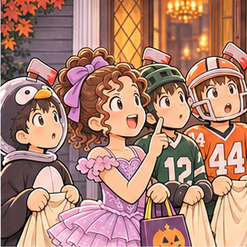
"That is correct," Mrs. Patty said as she turned around. "Come in. The candy is down in the ."
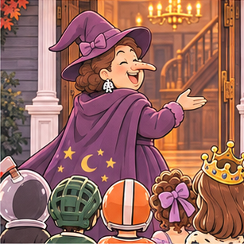
Down in the ? Why couldn't she just keep a bowl of candy in the front like normal people? Mrs. Patty is batty!
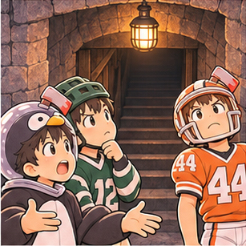
I didn't want to go down in Mrs. Patty's . I didn't want to see her husband's head in a down there. It figured that Andrea had to be so good at math.
If it weren't for her, we could have left. Mrs. Patty opened a door and told us to go down the steps. It was dark.
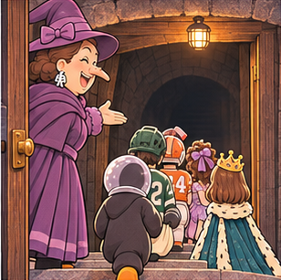
I could hardly see anything except some on the walls with candles inside them. When we got to the bottom, we had to walk through a . There were doors going off in different directions.
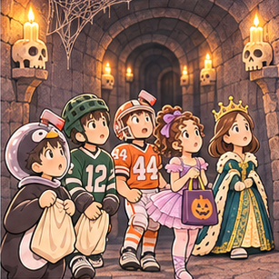
I didn't see any candy anywhere. We weren't sure which way to go.
"We're lost!" Andrea said.
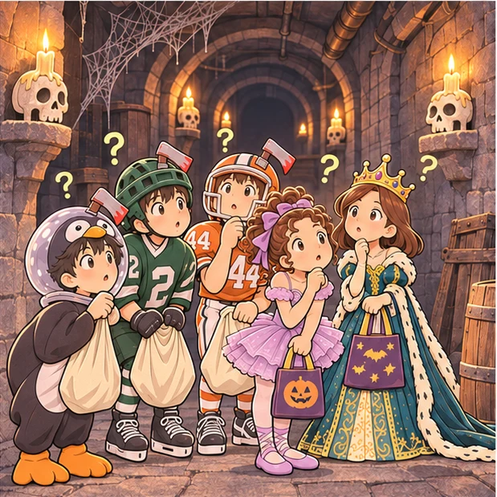
"Ouch!" Emily said. "I hit my head on something."
"Let's turn around and make a run for it," I said, "before it's too late."
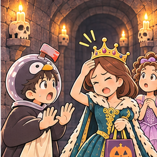
"I'm scared," Michael said. "I think I'm going to pee in my pants," said Ryan.
"If I die," Andrea told Emily, "you can have my candy."
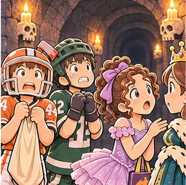
"You are a true friend," said Emily. "You can have my candy if I die."
I wished they would both die!
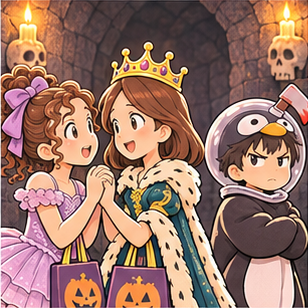
I didn't even care if I got their candy or not.
We came to the end of the . There was a door.
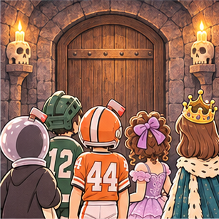
A sign on the door said, "Candy in Here." I put my hand on the .
"Don't open that door!" Michael said, just as I was about to turn the .
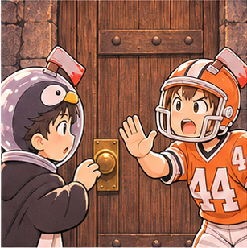
"Why not?" I asked. "In horror movies," Michael explained, "whenever somebody opens a door, a crazy guy wearing a out with an ax or something."
"Don't be silly," Ryan said.
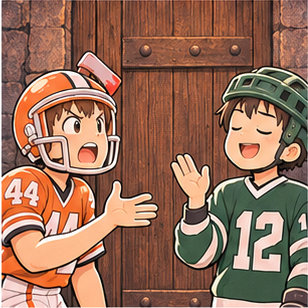
"Open the door, A.J. We'll get the candy and get out of here."
I looked at Ryan. Emily looked at Andrea.
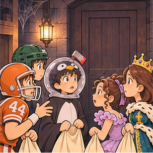
Michael looked at me. I didn't know what to say. I didn't know what to do.
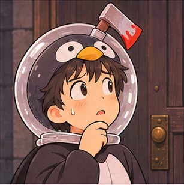
I had to think fast. So I turned the .
Do you want to know what was behind the door?
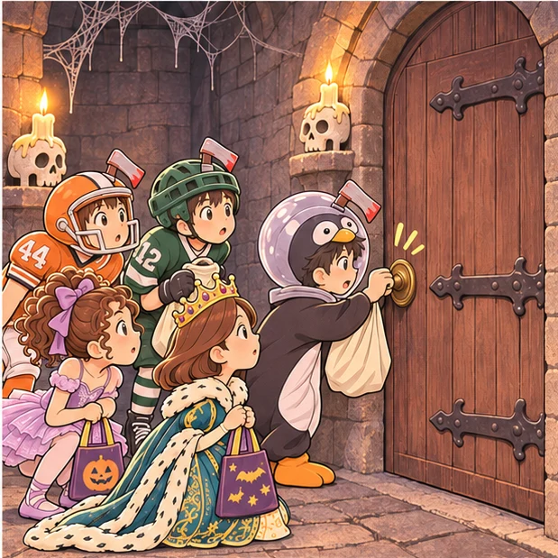
Well, I'm not going to tell you. "Okay, okay, I'll tell you. But you have to read the next chapter, so nah-nah-nah boo-boo on you."